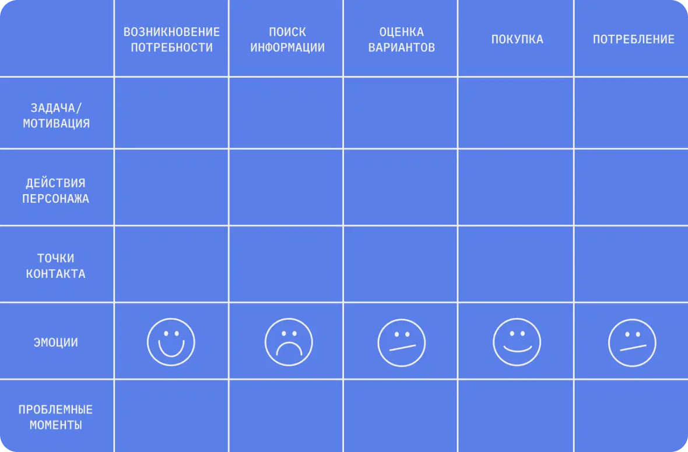
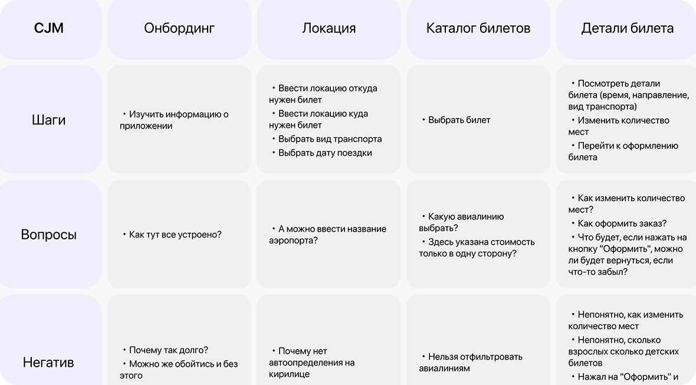

UX/UI дизайн
Сustomer journey map
CJM — схематичное описание всех этапов, которые проходит ПОКУПАТЕЛЬ, чтобы совершить покупку или получить услугу.
Покупатель — не просто пользователь интерфейса. Это потребитель услуги. Покупателя от пользователя отличает готовность платить деньги.
Сервис — не просто интерфейс. Это услуга, инструментом получения которой может быть (а может и не быть) интерфейс.
Отличие CJM от User flow
User Flow показывает путь клиента внутри интерфейса и не включает в себя этапы формирования потребности, поиска решения и т. д.
CJM же охватывает не только поведение пользователя в продукте, но и показывает, как формировалась потребность, как клиент искал решение и даже как от него отказался.
Customer Journey Map (CJM)
Компания создает CJM для своих клиентов, чтобы понять их путь от осознания потребности до получения заказа.
CJM может включать следующие элементы:
- Этапы: осознание голода, поиск в приложении, просмотр меню, оформление заказа, ожидание доставки, получение заказа
- Действия клиента на каждом этапе: открытие приложения, поиск любимых ресторанов, выбор блюд, оплата, отслеживание статуса заказа
- Эмоции клиента: голод, любопытство, нетерпение, удовлетворение
- Точки контакта: мобильное приложение, телефон службы поддержки, курьерская доставка
- Возможности для улучшения: ускорение оформления заказа, более точная информация о времени доставки, улучшение коммуникации курьера с клиентом
User Flow
Теперь компания фокусируется на оптимизации конкретного процесса — оформления заказа в мобильном приложении.
User flow для этого сценария может включать:
- Шаги: открытие приложения, переход к меню, выбор ресторана, выбор блюд, добавление в корзину, оформление заказа, выбор способа оплаты, подтверждение
- Действия пользователя на каждом шаге: нажатие кнопок, ввод данных, прокрутка, выбор опций
- Элементы интерфейса: кнопки, поля ввода, выпадающие списки, корзина
- Возможности для улучшения: упрощение навигации, оптимизация форм, персонализация рекомендаций
CJM дает компании более комплексное понимание клиентского пути, в то время как user flow фокусируется на оптимизации конкретного процесса взаимодействия пользователя с продуктом.
Для чего используют CJM
1. Понимание клиента
CJM помогает детально изучить поведение, потребности, боли и ожидания клиентов на каждом этапе их взаимодействия с компанией. Это дает глубокое понимание клиентского опыта.
Пример: Банк создает детальную CJM, чтобы понять потребности, ожидания и поведение различных сегментов своих клиентов - от молодых предпринимателей до пенсионеров. Это дает глубокое понимание того, что движет клиентами на каждом этапе их взаимодействия с банком.
2. Выявление точек взаимодействия
CJM выявляет все точки контакта клиента с компанией - от первого знакомства с брендом до послепродажного обслуживания. Это позволяет оптимизировать эти точки для улучшения клиентского опыта.
Пример: CJM помогает банку выявить все точки контакта клиентов — от первого знакомства с брендом и продуктами до обслуживания в отделениях, взаимодействия с онлайн-сервисами и мобильным приложением. Это позволяет оптимизировать эти точки для улучшения клиентского опыта.
3. Выявление "болевых точек"
Анализ CJM помогает выявить проблемные этапы взаимодействия, где клиенты испытывают неудобства, трудности или неудовлетворенность. Это ключевые области для улучшений.
Пример: Анализируя CJM, банк обнаруживает "болевые точки", где клиенты испытывают трудности, разочарование или неудовлетворенность. Например, это может быть сложность открытия счета онлайн, непонятные условия по кредитам или длительное ожидание в очереди в отделении.
4. Разработка решений
На основе CJM компании могут разрабатывать конкретные решения для улучшения клиентского пути — будь то изменение бизнес-процессов, доработка продукта или оптимизация маркетинговых коммуникаций.
Пример: На основе выявленных проблем банк разрабатывает конкретные решения для улучшения клиентского пути. Это может включать упрощение онлайн-процессов, внедрение "умных" чат-ботов в клиентскую поддержку, реорганизацию офисов для более быстрого обслуживания.
5. Повышение эффективности
Глубокое понимание пути клиента и точек взаимодействия позволяет компаниям эффективнее распределять ресурсы, фокусируясь на наиболее важных моментах.
Пример: Глубокое понимание клиентского пути позволяет банку эффективнее распределять ресурсы, фокусируясь на наиболее важных точках взаимодействия. Это помогает сократить издержки и повысить прибыльность.
6. Улучшение клиентского опыта
В конечном итоге, CJM помогает компаниям формировать более удобный, персонализированный и ценный клиентский опыт на всех этапах взаимодействия.
Пример: В итоге применение CJM помогает банку формировать более удобный, персонализированный и ценный клиентский опыт на всех этапах взаимодействия. Это повышает лояльность, частоту использования продуктов и рекомендации банка другим клиентам.
Этапы, которые проходит клиент на пути к покупке
1. Осознание потребности
На этом этапе клиент осознает, что у него есть определенная потребность, которую нужно удовлетворить. Это может быть как осознание реальной необходимости, так и возникновение желания.
Пример:
- Клиент осознает, что ему нужно открыть расчетный счет для ведения бизнеса
- Клиент понимает, что необходимо взять ипотечный кредит для покупки жилья
- Клиент чувствует, что ему нужно инвестировать сбережения, чтобы они работали и приносили доход
2. Поиск информации
Клиент начинает искать информацию о том, как можно решить возникшую проблему или удовлетворить желание. Он изучает различные источники — от интернета до рекомендаций знакомых.
Пример:
- Клиент изучает предложения разных банков по открытию расчетных счетов для ИП на их сайтах и в социальных сетях
- Клиент читает обзоры и сравнения ипотечных программ на специализированных финансовых порталах
- Клиент просматривает информацию о банковских инвестиционных продуктах на сайте банка и в финансовых блогах
3. Оценка вариантови
На этом этапе клиент сравнивает и оценивает различные предложения, продукты или услуги, которые могут удовлетворить его потребность. Он анализирует характеристики, цены, отзывы и другие факторы.
Пример:
- Клиент сравнивает условия по открытию расчетных счетов в различных банках, обращая внимание на тарифы, функциональность онлайн-банка и уровень клиентского сервиса
- Клиент анализирует процентные ставки, первоначальный взнос, сроки и другие параметры ипотечных кредитов от разных банков
- Клиент изучает доходность, риски и условия различных инвестиционных продуктов банков, чтобы выбрать подходящий для себя
4. Принятие решения о покупке
После сравнения альтернатив клиент принимает решение о том, какой вариант лучше всего подходит для него. На этом этапе происходит непосредственно оформление заказа или совершение покупки.
Пример:
- Клиент выбирает банк, который предлагает оптимальные условия для открытия расчетного счета и подает заявку
- Клиент принимает решение о получении ипотечного кредита в выбранном банке и оформляет заявку
- Клиент решает инвестировать сбережения в определенный банковский инвестиционный продукт и связывается с банком для его приобретения
5. Приобретение товара/услуги
Клиент получает или забирает оплаченный товар или услугу. Это может включать процессы доставки, установки, настройки и т.д.
Пример:
- Банк открывает для клиента расчетный счет, выпускает и доставляет карту
- Банк одобряет ипотечную заявку клиента, согласовывает условия кредита и оформляет сделку
- Банк принимает от клиента денежные средства для инвестирования и зачисляет их на соответствующий инвестиционный продукт
6. Использование и обслуживание
После приобретения клиент начинает использовать товар или услугу. На этом этапе он может взаимодействовать со службой поддержки, обращаться за дополнительными услугами, сервисом и т.п.
Пример:
- Клиент использует расчетный счет для проведения платежей, получения выписок, управления счетом через интернет-банк
- Клиент регулярно вносит платежи по ипотечному кредиту, при необходимости взаимодействует со службой поддержки банка
- Клиент отслеживает доходность и состояние своих инвестиционных вложений, при необходимости консультируется с менеджером банка
7. Оценка и обратная связь
Завершающий этап, на котором клиент оценивает свой опыт взаимодействия с компанией и дает обратную связь. Это может быть отзыв, рекомендация или жалоба.
Пример:
- Клиент оставляет отзыв о качестве обслуживания в расчетном счете на сайте банка или в социальных сетях
- Клиент дает обратную связь банку относительно удобства ипотечного кредита и работы службы поддержки
- Клиент делится мнением об эффективности и доходности инвестиционного продукта, рекомендует его своим знакомым
Структура customer journey map
Чтобы создать CJM, нужно разработать структуру, а затем собрать данные для каждого её элемента. Можно включать в маркетинговую карту каждый из них или некоторые — в зависимости от того, кто и для чего изучает клиентский опыт.

Этапы клиентского пути
Это ключевые этапы, через которые проходит клиент в процессе взаимодействия с компанией.
Пример:
- Осознание потребности (например, в открытии расчетного счета, получении кредита, инвестировании)
- Поиск информации о банковских продуктах и услугах
- Сравнение и оценка предложений разных банков
- Выбор банка и подача заявки на продукт
- Оформление и получение банковской услуги
- Использование продукта/услуги
- Повторные обращения и рекомендации
Действия клиента
На каждом этапе клиент совершает определенные действия. Например, на этапе "Поиск информации" клиент может:
- Искать информацию на сайте компании
- Читать отзывы других покупателей
- Сравнивать предложения конкурентов
Пример:
- Изучение информации на сайте банка, в мобильном приложении
- Чтение отзывов и сравнение условий на финансовых порталах
- Консультации с менеджерами банка в отделении или по телефону
- Заполнение заявки онлайн или лично в офисе
- Предоставление необходимых документов
- Осуществление платежей, управлее счетами через интернет-банк
- Обращение в службу поддержки при возникновении вопросов
Эмоции клиента
CJM также отражает эмоциональное состояние клиента на каждом этапе - от положительных эмоций до негативных. Эти данные помогают понять, как клиент себя чувствует при взаимодействии с компанией.
Пример:
- Удовлетворение от быстрого и простого открытия счета онлайн
- Разочарование от длительного ожидания решения по кредитной заявке
- Уверенность в безопасности средств при использовании мобильного приложения
- Негативные эмоции от сложности взаимодействия со службой поддержки
- Радость от получения одобрения по ипотечному кредиту
- Спокойствие и уверенность при наблюдении за доходностью инвестиций
Точки контакта
Это каналы и точки взаимодействия клиента с компанией. Например, в рознице это могут быть:
- Сайт компании
- Мобильное приложение
- Телефонный звонок в колл-центр
- Личное посещение магазина
Пример:
- Интернет-сайт банка
- Мобильное приложение
- Отделения банка
- Телефонный контакт-центр
- Социальные сети банка
- Взаимодействие с персональным менеджером
Боли и проблемы
CJM выявляет "болевые точки", где у клиента возникают сложности, разочарования или неудовлетворенность. Это ключевые области для улучшения.
Пример:
- Сложность открытия счета или оформления заявки онлайн
- Длительные сроки рассмотрения кредитных заявок
- Непонятные условия по банковским продуктам
- Неудовлетворительное качество обслуживания в отделениях
- Трудности при решении вопросов через службу поддержки
Возможности для улучшений
На основе анализа CJM компания определяет, какие именно изменения необходимо внести, чтобы оптимизировать клиентский опыт.
Пример:
- Оптимизация и упрощение онлайн-процессов
- Сокращение времени принятия решений по кредитам
- Повышение прозрачности и понятности условий по продуктам
- Улучшение клиентского сервиса в отделениях банка
- Внедрение "умных" чат-ботов в клиентскую поддержку
- Персонализация предложений и рекомендаций для клиентов

Behance: Nesibeli Ordabek
Как составить карту пути клиента
1. Определи цель карты пути клиента
Важно понять, что ты хочешь достичь с помощью CJM — улучшить онлайн-банкинг, повысить эффективность работы в отделениях, оптимизировать процесс одобрения кредитов и т.д.
2. Выбери целевого клиента
Реши, для какого сегмента клиентов ты будешь строить карту пути — для молодых предпринимателей, пенсионеров, VIP-клиентов и т.п. Это позволит сфокусироваться на их конкретных потребностях.
3. Собери данные о клиенте
Используй различные источники: интервью с клиентами, наблюдения за их поведением, данные CRM, аналитику веб-сайта и приложений. Это поможет понять их мотивы, ожидания, болевые точки.
4. Определи этапы пути клиента
Выдели ключевые этапы, через которые проходит клиент при взаимодействии с банком — от первого знакомства до повторных обращений. Как правило, их 5-7.
5. Опиши действия клиента на каждом этапе
Детально проанализируй, что клиент делает на каждом этапе — какие запросы оставляет, какие каналы использует, какие задачи решает.
6. Отрази эмоции клиента
Определи, какие чувства и эмоции возникают у клиента на каждом этапе — от удовлетворения до разочарования. Это поможет понять его мотивацию.
7. Выяви точки контакта
Зафиксируй все точки взаимодействия клиента с интерфейсом — сайт, мобильное приложение, отделение, колл-центр и пр. Это ключевые моменты для улучшения опыта.
8. Определи "болевые точки"
Выяви проблемные или неудобные моменты, где клиент испытывает трудности, разочарование или неудовлетворенность. Это области для оптимизации.
9. Разработай решения
На основе анализа CJM сформулируй конкретные идеи и инициативы для устранения "болевых точек" и улучшения клиентского пути.
10. Регулярно обновляй CJM
Карта пути клиента — это динамический инструмент, который нужно регулярно пересматривать и актуализировать, чтобы оставаться актуальным.
Инструменты для построения CJM
Google-таблицы или Excel. Инструмент, для которого не нужны платные подписки или специальные навыки. Идеален для небольших и промежуточных карт, которые нужно обсудить с командой и доработать.
Онлайн-доски и специальные сервисы. Среди них — Miro, UXPressia, Canvanizer.
Дизайнерские программы и редакторы. Дизайнерские программы и редакторы. Если создание CJM требует визуализации, например, иконок, логотипов или дизайн-макета, то можно сделать карту в Figma, Adobe Illustrator или Photoshop.
На обычной доске. В стартапах и небольших командах CJM можно строить на офисной доске при помощи стикеров и маркера.
Практика
Создание CJM для существующего продукта
Определи ключевые этапы путешествия пользователя для конкретного продукта (например, онлайн-магазина) и создай карту пути клиента, включающую действия, эмоции, точки касания и боли.
Картирование негативного опыта
Изучи негативный путь пользователя при взаимодействии с определённым продуктом или услугой. Создай CJM, который выделяет проблемные зоны и источники недовольства.
Оценка пользовательского опыта
Составь CJM для нового продукта или услуги, а затем проведи оценку пользовательского опыта, используя метрики, такие как NPS (Net Promoter Score) или CSAT (Customer Satisfaction Score).